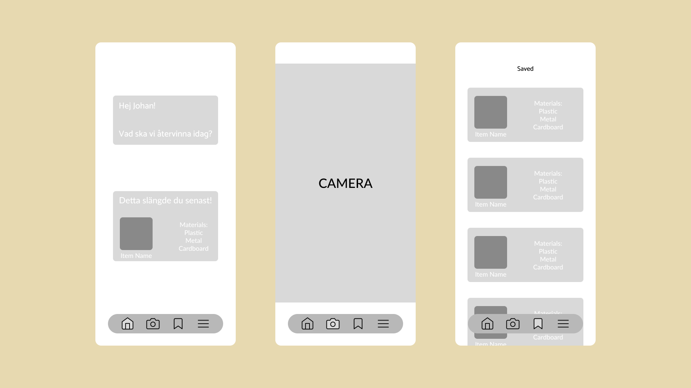
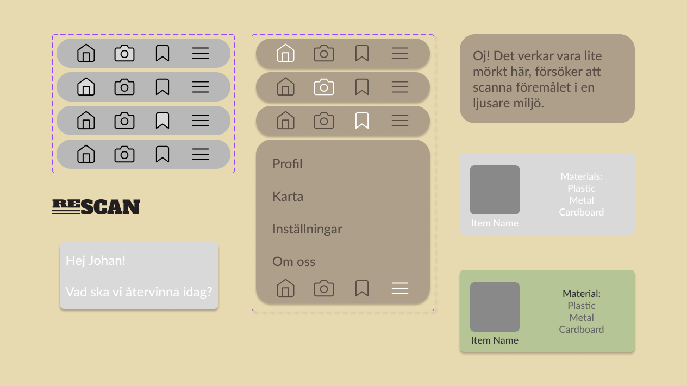

Case
Hur kan man hjälpa unga att bli bättre på att källsortera och slänga
skräp på rätt sätt? Det var en frågeställning jag kom fram till efter
att jag gjorde research på människor mellan 19 och 30 års-åldern om
hur deras källsorteringsvanor såg ut.
Efter att ha färdigställt frågeställningen var det att jobba på en
lösning som hade någon typ av AI-support. Jag valde då att ha en
lösning som skulle använda sig utav predictive AI, där AI skulle
hjälpa användaren att identifiera olika material på olika objekt.

